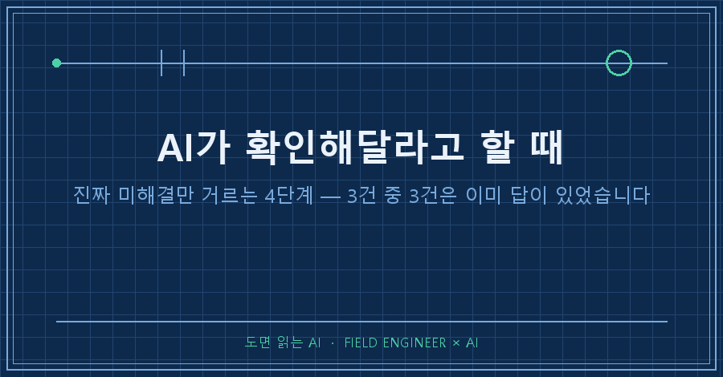
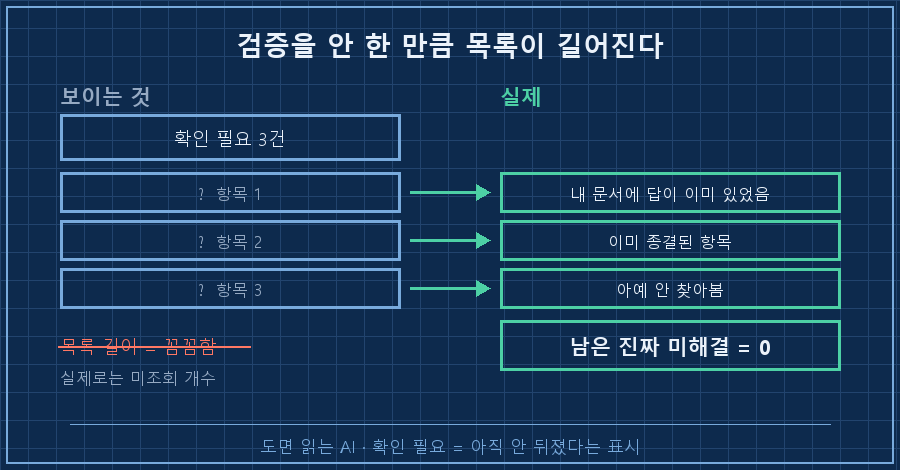
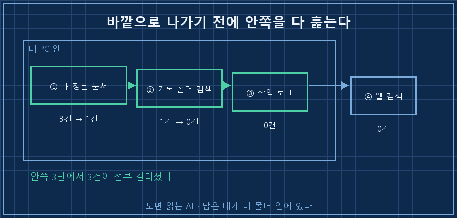
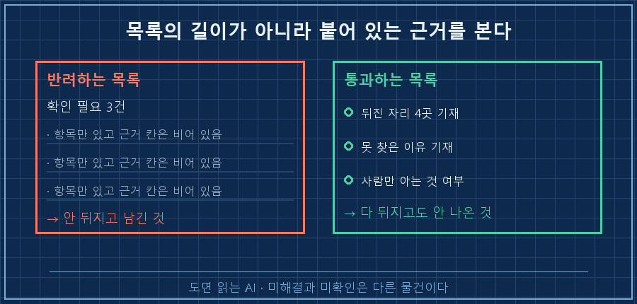

AI한테 몇 달치 개인 기록을 정리시켰더니, 결과물 맨 아래에 이런 칸이 붙어 나왔습니다. "확인 필요 3건."
목록이 꼼꼼해 보여서 며칠을 그냥 뒀어요. 그러다 첫 줄을 눌러봤는데, 답이 이미 제 문서 안에 적혀 있더라고요.
먼저 결론부터 적을게요.
AI가 확인해달라고 할 때 그 항목은 대개 미해결이 아니라 미조회입니다. 몰라서 남긴 게 아니라 아직 안 뒤져본 거예요. 그래서 저는 그 목록을 받으면 답을 찾기 전에 네 군데를 순서대로 뒤지게 먼저 시킵니다. 이 순서를 넣었더니 3건이 그 자리에서 전부 사라졌어요. 대신 저 아니면 알 수 없는 두 줄만 새로 남았고요.
2026년 9월 기준이고요. 대화형 AI에 내 기록 폴더를 붙여 쓰는 환경이면 도구를 안 가리고 똑같이 됩니다. 개인 기록 정리 얘기라 특정 분야 조언은 아니에요.
설비 제어를 십오 년 했습니다. 현장에서 제일 싫어하는 서류가 뭐냐면 칸마다 "확인 필요"라고 적힌 검사표예요. 그건 점검한 표가 아니라 점검 안 한 표거든요. 그런데 제 AI가 딱 그 표를 만들어서 저한테 내밀고 있었습니다..
1. "확인 필요 3건"의 정체부터 봤습니다
한 건씩 직접 확인해봤어요. 세 건 다 제가 아니라 AI가 30초면 끝낼 수 있는 일이었습니다.
| AI가 남긴 말 | 실제 상황 | 필요했던 작업 |
|---|---|---|
| "통에 적힌 표시를 확인해 주세요" | 자기가 석 달 전에 만든 표에 이미 판정이 적혀 있었음 | 자기 문서 다시 읽기 |
| "이 항목은 미해결입니다" | 같은 문서에 "문제 없음"으로 종결된 항목 | 종결 여부 확인 |
| "1단계는 실패로 확정합니다" | 실패라고 볼 근거가 기록 어디에도 없었음 | 기록 폴더 검색 한 번 |
두 번째 줄이 특히 아팠어요. 이미 닫아둔 항목이 근거도 없이 경고 표시를 달고 되살아난 거니까요. 목록은 길어졌는데 새로 밝혀진 건 하나도 없었습니다.
여기서 알았어요. 미해결 목록이 길다고 꼼꼼한 게 아니라, 검증을 안 한 만큼 목록이 길어진다는 걸요.

2. 목록을 받으면 답 대신 이 한 줄을 먼저 보냅니다
전에는 목록을 받으면 제가 한 줄씩 확인해줬어요. 그러다 순서를 바꿨습니다. AI가 확인해달라고 할 때 답을 찾아주는 대신, 목록을 통째로 되돌려 보내는 거예요.
이 3건 중에 네가 지금 직접 확인할 수 있는 건 몇 개야?
확인 가능한 건 먼저 확인하고, 그러고도 안 되는 것만 남겨줘.
남길 때는 어디를 뒤졌는데 왜 못 찾았는지 같이 적어줘.세 줄짜리인데 마지막 줄이 핵심입니다. "왜 못 찾았는지 적어줘"를 붙이면 안 뒤지고 남기는 게 불가능해져요. 뒤진 자리를 적으려면 실제로 뒤져야 하니까요.
3. 뒤지는 순서 — 가까운 데서 먼 데로
문제는 "뒤져봐"라고만 하면 AI가 곧장 인터넷부터 검색한다는 거예요. 정작 답은 제 폴더 안에 있는데도요. 그래서 순서를 못 박았습니다.
1. 내가 만든 정본 문서 전문 — 제일 자주 여기서 나옵니다. 이번 3건 중 2건이 여기서 끝났어요
2. 기록 폴더 전문 검색 — 과거에 이 얘기를 한 적이 있는지
3. 작업 로그 — 문서로 안 남은 자잘한 실행 이력
4. 웹 검색 — 바깥 정보가 필요한 것만 마지막에
3번까지가 전부 제 PC 안입니다. 밖으로 나가기 전에 안쪽을 다 훑는 게 요점이에요. 실제로 세 번째 항목은 이 명령 한 줄로 판가름 났습니다.
$ grep -ril "그 항목" ./기록/ ./로그/
(결과 없음)
기록 폴더 전체 + 작업 로그 675건 검색 → 관련 언급 0건
그런데 이 0건을 보고 저는 처음에 검색이 실패한 줄 알았어요. 아니었습니다.
기록이 0건이라는 건 제가 그 얘기를 어디에도 남긴 적이 없다는 뜻이거든요. AI가 "실패로 확정"이라고 단정한 근거가 실은 없었다는 게 그 0건으로 증명된 겁니다. 그래서 그 줄은 확정이 아니라 미확정으로 되돌렸어요.
이게 4단계를 돌리는 진짜 이유예요. 답을 찾으려는 게 아니라 단정할 자격이 있는지를 먼저 보는 겁니다. 안 뒤지고 남긴 "미해결"과, 다 뒤지고도 안 나온 "미확인"은 완전히 다른 물건이에요.
4. 사람한테 넘겨도 되는 건 딱 한 종류입니다
그럼 AI가 저한테 물어봐도 되는 건 뭘까요. 이번에 선을 이렇게 그었습니다.
| 사람만 아는 것 (물어봐도 됨) | 기록에 있는 것 (물어보면 안 됨) |
|---|---|
| 내 몸 상태, 지금 느끼는 것 | 제품에 적힌 표시, 문헌, 규격 |
| 내가 실제로 한 행동 | 과거 판정 이력, 종결 여부 |
| 현장에 놓인 실물 | 예전에 쓴 문서 안의 숫자 |
그리고 이 표를 만들다가 이번 건에서 제일 큰 실수를 찾았어요.
저는 어느 항목을 원래 정한 양의 절반으로 혼자 줄여서 쓰고 있었습니다. 근데 그걸 어디에도 안 적어놨어요. AI는 원래 계획대로 계산했고, 결과적으로 지금 제가 하고 있는 것의 두 배를 다음 계획으로 내밀었습니다..
이건 AI 탓이 아니에요. 왼쪽 칸, 그러니까 나만 아는 것이었으니까요. 다만 제가 안 적었으니 AI 입장에선 존재하지 않는 정보였던 거죠. 그래서 규칙을 하나 더 넣었습니다. 내가 스스로 바꾼 건 그날 기록에 남긴다. 계획만 주고 실제를 안 주면, 계산은 계획 위에서만 정확해집니다.
덧붙여 이번에 같이 배운 것 하나. 바꿀 게 두 개면 한 번에 하나씩 바꿔야 해요. 저는 둘을 동시에 바꿨다가 뭐가 효과를 냈는지 해석이 안 되는 상황을 만들었습니다..
확인 방법 — 잘 돌아가는지 어떻게 아나요
가이드는 성공 판정이 있어야 쓸모가 있죠. 다음번에 AI가 확인해달라고 할 때, 그 목록에서 이 세 가지를 보시면 됩니다.
- 미해결 목록 아래에 뒤진 자리가 적혀 있는가 (없으면 아직 안 돌린 겁니다)
- 이미 종결한 항목이 새 근거 없이 다시 올라와 있지는 않은가
- 남은 항목이 전부 "사람만 아는 것" 칸에 들어가는가
세 개가 다 맞으면 그 목록은 진짜 미해결입니다. 저는 3건에서 0건이 됐고, 대신 딱 두 줄이 새로 남았어요. 둘 다 제가 직접 겪어봐야만 알 수 있는 것들이었습니다.

이건 저도 한참 헷갈렸어요
Q. AI가 모른다고 솔직하게 말하는 건 좋은 거 아닌가요?
모른다고 하는 건 좋습니다. 문제는 안 찾아보고 모른다고 하는 것이에요. 둘은 겉모습이 똑같아서 구분이 안 갑니다. 그래서 "어디를 뒤졌는지 적어라"를 붙이는 거예요. 뒤진 자리가 적혀 있으면 진짜 모르는 거고, 안 적혀 있으면 안 뒤진 겁니다.
Q. 그럼 확인 요청을 아예 못 하게 막으면 되나요?
그건 더 위험합니다. 막아버리면 AI가 모르는 걸 아는 척 채워 넣어요. 막을 게 아니라 조건을 다는 겁니다. 네 군데를 다 돌린 뒤에도 안 나오면 그때는 얼마든지 물어보라고요.
Q. 기록 폴더를 뒤지게 하려면 대단한 도구가 필요한가요?
아니요. 저도 명령어 한 줄에 폴더 경로 두 개가 전부였어요. 필요한 건 검색 기능이 아니라 평소에 기록을 남겨두는 것입니다. 이번에도 검색은 잘 돌았는데 찾을 내용 자체가 없었잖아요. 도구보다 그쪽이 먼저예요.
정리하면
- "확인 필요"는 답이 아니라 아직 안 뒤졌다는 표시로 읽는다
- 목록을 받으면 확인해주기 전에 "직접 확인 가능한 게 몇 개냐"를 되돌려 묻는다
- 뒤지는 순서는 내 문서 → 기록 폴더 → 작업 로그 → 웹 검색
- 못 찾았으면 어디를 뒤졌는지를 같이 적게 한다. 0건도 결과다
- 사람한테 넘길 건 몸 상태·내가 한 행동·현장 실물, 이 세 가지뿐이다
- 내가 계획을 벗어나 뭔가 바꿨으면 그날 기록에 남긴다
AI가 게을러서 목록이 길어진 게 아니었어요. 제가 그 목록을 그냥 숙제로 받아든 게 원인이었습니다. 받는 방식만 바꿨을 뿐인데 3건이 0건이 됐고요!
다음 편에서는 이렇게 남은 진짜 미확인 항목에 판정하는 날짜를 걸어두는 방법을 적어볼게요.
이런 반려 기록은 성공 기록보다 많은데, 그쪽도 makefield.ai에 순서대로 쌓아둡니다.
태그: #AI가확인해달라고할때 #AI미해결항목 #AI검증시키는법 #AI가되묻기만할때 #AI결과물검수 #AI에게일시키기 #AI자동화구축 #AI팩트체크 #AI에게물어보기 #AI리서치 #AI활용법 #AI실무활용 #개인기록관리 #개인AI에이전트 #도면읽는AI